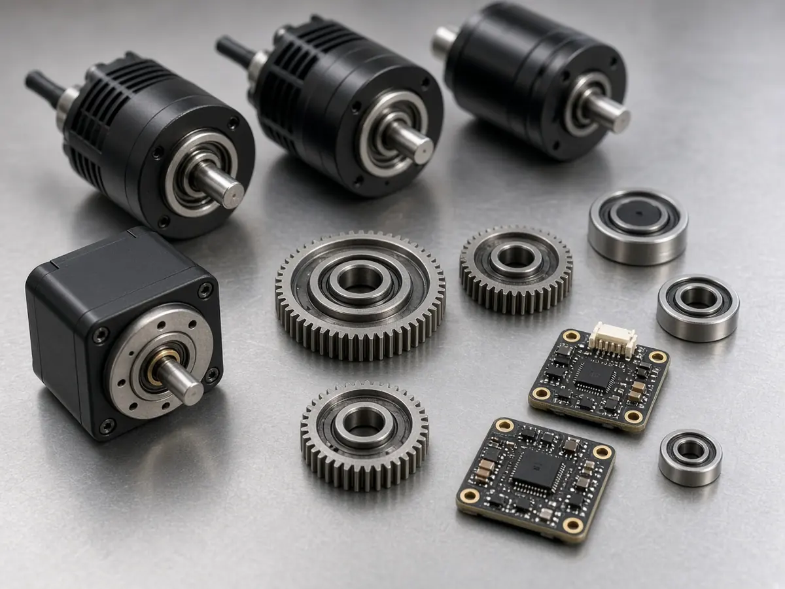

Policy
US calls robot imports a national security risk but opts for trade talks, not new tariffs, for now
Short answer: On 28 October 2026, President Donald J. Trump issued a proclamation agreeing with the Commerce Secretary's Section 232 finding that imports of robotics, industrial machinery and their parts threaten to impair US national security. It directs negotiations with trading partners rather than imposing new tariffs at this stage, according to the proclamation and an EY Tax News alert.
Humanoids are named directly. According to The Robot Report, the proclamation cites "advanced robots — such as autonomous robots, humanoid and quadruped robots, and autonomous ground vehicles" as providing direct support to the US military.
According to EY's summary, the Commerce findings cover the role of these machines in defence production, their use across all 16 US critical infrastructure sectors, US reliance on imports with growing import values over the last decade, potential cybersecurity risk from equipment sourced from certain foreign entities, and domestic production that is not sufficient to meet national security needs.

Under the plan, the Commerce Secretary and the US Trade Representative will pursue agreements with trading partners and must update the President at least once within 180 days of 28 October. EY says the proclamation allows the President to consider other remedies depending on how talks go, including tariffs, duties, quotas, fees and a programme to encourage new US production investment. EY also notes that existing Section 232 tariffs on steel, aluminium and copper are not changed, and that no specific product codes have been identified yet.
Industry reaction gathered by The Robot Report treated the move as a signal rather than an immediate cost. Ash Sharma of Interact Analysis told the publication it should not be read as "a new robotics tariff today" but as an indication of direction. The White House fact sheet sets out the administration's reasoning. For context on supply and policy elsewhere, see our pieces on China's humanoid output and standards and Chinese makers seeking trials in South Korea, and our funding and policy hub.
Sources
- Adjusting Imports of Robotics, Industrial Machinery, and Their Parts and Components into the United States (The White House, proclamation, 28 Oct 2026)
- Fact Sheet: President Donald J. Trump Adjusts Imports of Robotics, Industrial Machinery, and Their Parts and Components (The White House, 28 Oct 2026)
- US concludes Section 232 investigation into robotics and industrial machinery imports and directs trade negotiations (EY Tax News, 29 Oct 2026)
- White House makes Section 232 determination regarding foreign-made robots (The Robot Report, 29 Oct 2026)